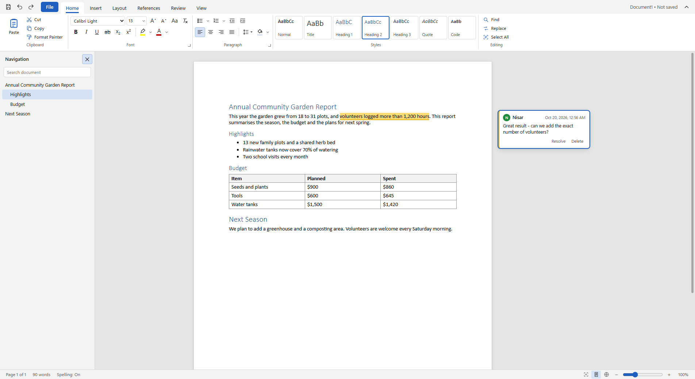
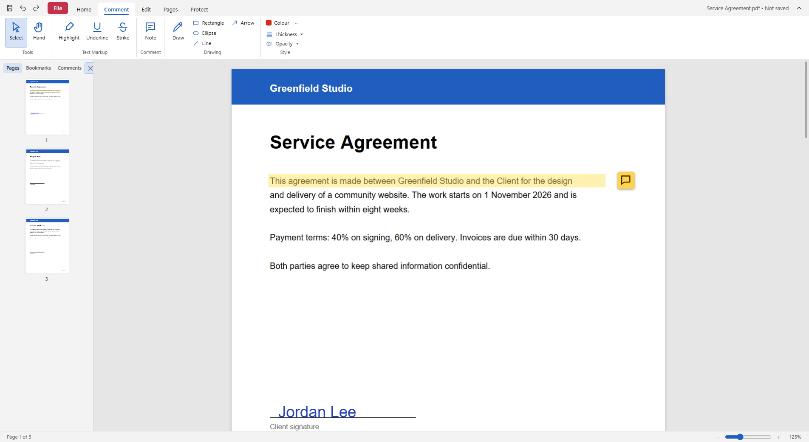

A free, open-source word processor and PDF editor for Windows. Works offline. No account, no ads, no tracking.
Source code · Get it free from the Microsoft Store · Installer · Privacy policy · Support


MIT licence. Not affiliated with Microsoft or Adobe.